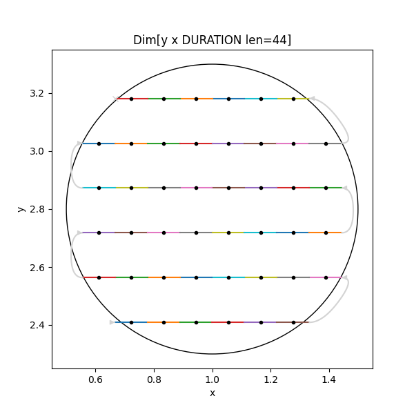

scanspec#


Specify step and flyscan Paths using combinations of:
Specs like Line or Spiral
Optionally Snaking
Zip, Product and Concat to compose
Masks with multiple Regions to restrict
Serialize the Spec rather than the expanded Path and reconstruct it on the server. It can them be iterated over like a cycler, or a stack of scan Frames can be produced and expanded Paths created to consume chunk by chunk.
PyPI |
|
Source code |
|
Documentation |
|
Releases |
An example ScanSpec of a 2D snaked grid flyscan inside a circle spending 0.4s at each point looks like:
from scanspec.specs import Line, fly
from scanspec.regions import Circle
grid = Line(y, 2.1, 3.8, 12) * ~Line(x, 0.5, 1.5, 10)
spec = fly(grid, 0.4) & Circle(x, y, 1.0, 2.8, radius=0.5)

You can then either iterate through the scan positions directly for convenience:
for point in spec.midpoints():
print(point)
# ...
# {'y': 3.1818181818181817, 'x': 0.8333333333333333, 'DURATION': 0.4}
# {'y': 3.1818181818181817, 'x': 0.7222222222222222, 'DURATION': 0.4}
or create a Path from the stack of Frames and consume chunks of a given length from it for performance:
from scanspec.core import Path
stack = spec.calculate()
len(stack[0]) # 44
stack[0].axes() # ['y', 'x', 'DURATION']
path = Path(stack, start=5, num=30)
chunk = path.consume(10)
chunk.midpoints # {'x': <ndarray len=10>, 'y': <ndarray len=10>, 'DURATION': <ndarray len=10>}
chunk.upper # bounds are same dimensionality as positions
How the documentation is structured#
Documentation is split into four categories, also accessible from links in the side-bar.
Tutorials#
Tutorials for installation, library and commandline usage. New users start here.
How-to Guides#
Practical step-by-step guides for the more experienced user.
Explanations#
Explanation of how the library works and why it works that way.
Reference#
Practical step-by-step guides for the more experienced user.
Reference
- API
scanspecscanspec.__version__scanspec.corescanspec.specsscanspec.regionsscanspec.plotscanspec.service
- Contributing to the project
- Releases
- Index